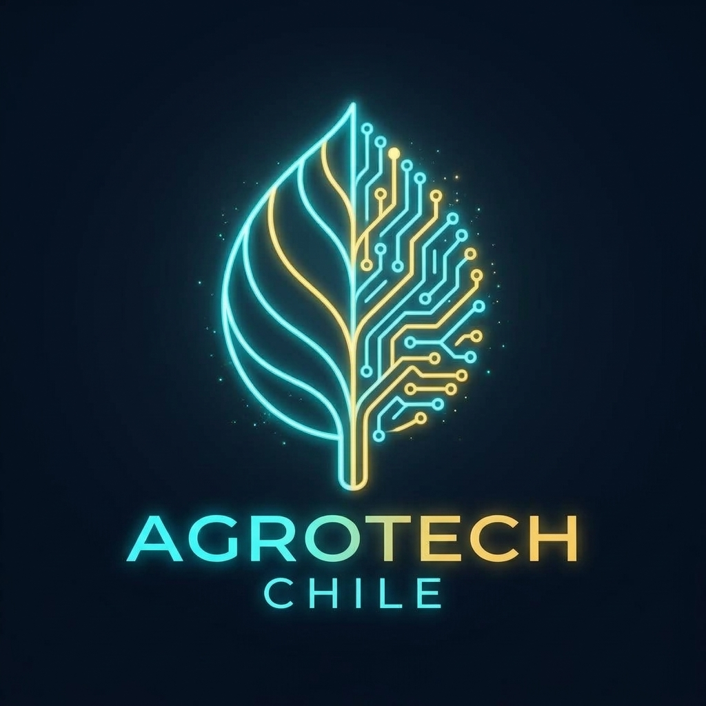
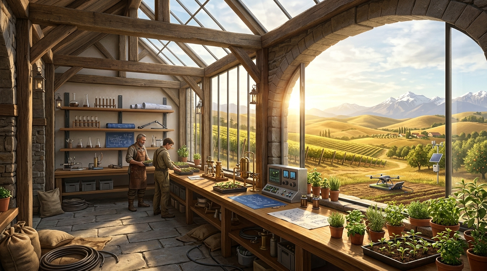
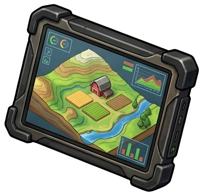
Vuelo libre WebGL, curvas de nivel Keyline, mallas procedurales y simulación solar estacional en terreno vivo.
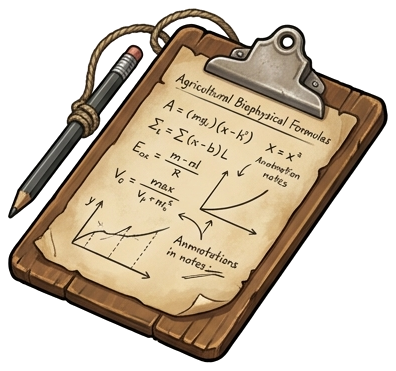
Consola unificada: Zonas de Mollison, balance de agua del tranque, telemetría viva y deslindes legales del predio.
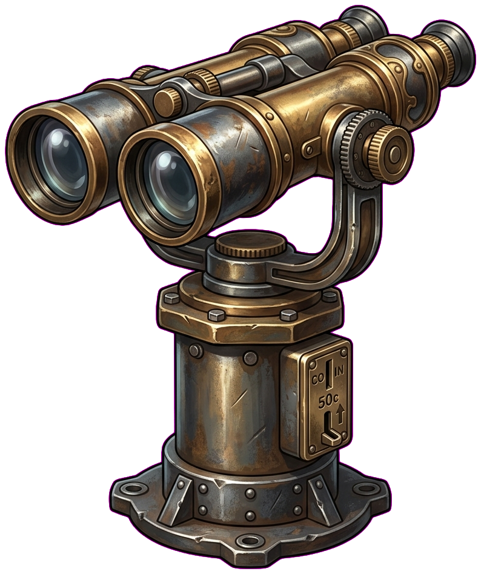
Curvas de crecida duales Río Longaví (T=10/50/100), propagación Rothermel, atenuación cortafuegos 92% y transecto dinámico SVG.
Gemelo GIS de macro-cuenca: ortofoto multiespectral, radar Windy de viento Puelche, estaciones fluviométricas DGA y capas hídricas.
Lecturas de humedad de suelo a 10/30/60 cm, riesgo de heladas en floración, modelo Mills de botrytis y estado de baterías solares.
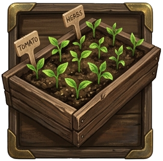
Catálogo botánico, almácigos criollos, cuarteles de secano, matrices de gremios milpa, biopreparados y grados día GDD.
Rotación Voisin en 8 potreros, trazabilidad individual RFID SAG, báscula ganadera, aforo forrajero y ciclado de bosteo.
Convenios de colindancia, comités de agua APR, protocolos de fajas cortafuegos coordinadas y asamblea rural comunitaria.
Estratigrafía de calicatas (horizontes A-B-C), carbono orgánico SOC, micorrizas, cámaras trampa y transectos de bosque nativo.
Monitor unificado de telemetría multi-predial, balance hídrico, piro-resiliencia canónica Van Wagner y ejecución presupuestaria de proyectos territoriales.
El visor de predio (Predio Twin), el de vecinos (Mesa Vecinal) y el de cuenca (Cerro Longaví) operan como ramas independientes sin redirecciones directas cruzadas. Todo dato y cambio de contexto se gestiona y conmuta a través del Tronco Hub.
Estado comparativo de humedad edáfica, piro-riesgo individual, estado de cortafuegos y derechos de agua.
| Predio | Rol SII | Área (ha) | Bioma / Cultivo | Humedad Suelo | FWI Local | Faja Cortafuego | Derechos DGA | Acción |
|---|
Frente de fuego potencial en ladera andina (Pino Insigne). Se mantiene activa la faja de 45m de Fundo Meniel como buffer crítico de contención.
Caudal actual: 124.5 m³/s (Nivel Seguro). Tranque Keyline habilitado con capacidad libre de 8.200 m³ para absorción de pulsos torrenciales.
9/10 propietarios han depositado su firma digital en el pacto de servidumbre mutua. Próxima asamblea programada en Fundo Meniel.
Explora y comprende de manera lúdica e interactiva los equilibrios ecológicos, la sincronización entre el predio, los vecinos y la cuenca, y los modelos biofísicos del territorio.
Aprende jugando cómo opera el ecosistema de la plataforma: la arquitectura del Principio Árbol (Tronco & Ramas), el gemelo biofísico del Predio (Keyline & PRV), la defensa comunitaria de Los Vecinos (La Mesa) y el balance hídrico de La Cuenca (El Cerro).
El Tronco es la Suite (Hub Central). El Predio (12.8 ha), los Vecinos (508 ha) y la Cuenca (122k ha) son sus tres ramas. Cada rama es autónoma e independiente, pero se comunican con las demás exclusivamente a través del Tronco. Nunca deben existir redirecciones directas entre ramas.
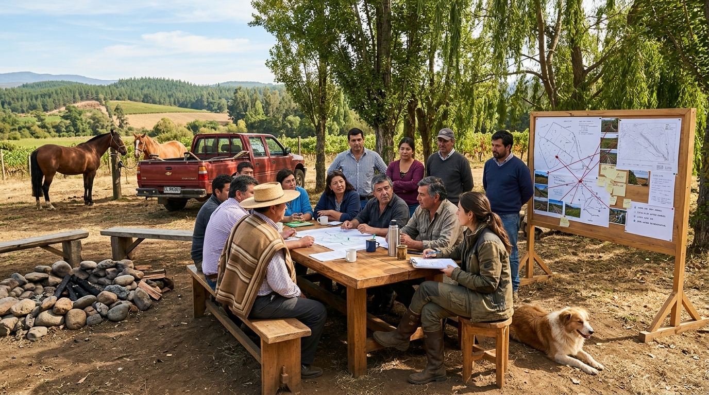
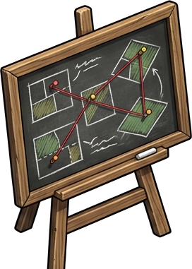
Mapeo dinámico de flujos capilares entre el Fundo Meniel y sus vecinos: excedentes solares FV, agua de tranque y biomasa podada.
Mapeo integral de procedencia de datos (CBR, SII, DGA, CIREN, Copernicus, INIA) y paneles rellenables de títulos catastrales para erradicar alucinaciones.
Guía probada para profesionales de ciencias sociales y extensionistas: Diagnóstico Rural Participativo (DRP), mapeo de actores de agua y resolución de conflictos.
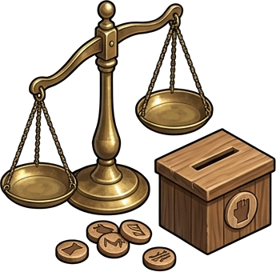
Sistema ponderado de 100 Créditos de Voz por predio. Voto cuadrático C = V² para priorizar acuerdos de compuertas, faja cortafuegos y repetidor LoRa.
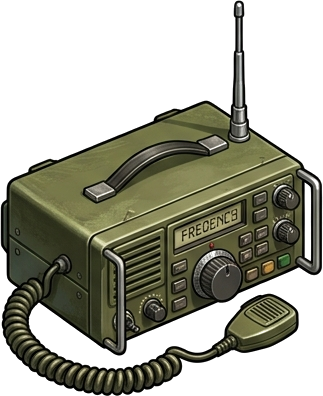
Sintonizador en vivo de emisoras locales (Radio Ancoa Linares, FM+ Maule, Radio Marisol, Guza FM) más despacho de emergencia por VHF 146.520 MHz.
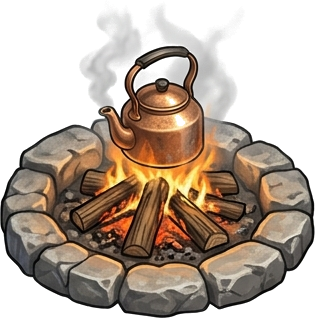
Registro oficial de sesiones de la asamblea vecinal: acta de turnos de canal de riego, protocolo de apertura de vertederos y faja cortafuegos.
Selecciona un predio para activar su Maletín Predial en la asamblea o presiona "Volar en Mapa" para inspeccionar su geometría en GIS:
24.8 ha • PRV & Keyline
68.4 ha • Arroz & Crecidas
112.5 ha • Forestal Pino
84.0 ha • Trigo & Avena
36.2 ha • Arándanos & Mora
28.0 ha • Berries Orgánicos
55.0 ha • Bosque & Miel
18.5 ha • Frutales & Tranque
38.0 ha • Uva Torontel
150.0 ha • Cabecera Andina
Métricas biofísicas individuales que el productor pone sobre la mesa para justificar inversiones compartidas o derechos de agua:
Variables ambientales macro que determinan el riesgo y las restricciones colectivas que los vecinos deben considerar al acordar obras:
Mociones de financiamiento compartido y acuerdos vinculantes con voto ponderado por mayordomía de suelo (Voice Credits):
Rol 142-88 (Meniel) y Rol 142-12 (San José) establecen servidumbre de desagüe ecológico hacia canal matriz con aforo continuo telemétrico.
Rol 142-88 (Meniel) y Rol 143-05 (Los Boldos) pactan franja de exclusión de combustible fino con pastoreo de ganado ovino y desmalezado anual.
Prioridad de llenado de estanques para consumo humano de 30 familias en APR Copihue durante meses de sequía máxima (Enero-Marzo).
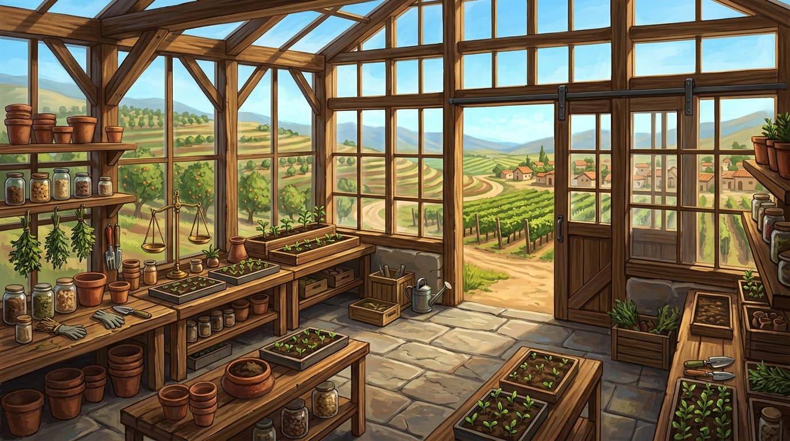
Monitoreo de bandejas de germinación, sustrato vivo micorrizado, índice de vigor germinativo y calendarización de trasplante a raíz desnuda.
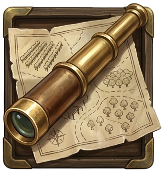
Observación fenológica de huertos exteriores, viñedos de secano interior, espalderas de avellanos europeos y rodales frutales.
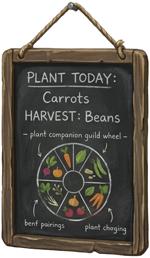
Asociaciones sinérgicas maíz-poroto-calabaza (Milpa), aromáticas repelentes y cálculo del Land Equivalent Ratio (LER +34%).
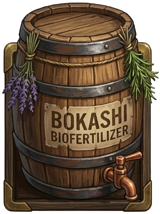
Fórmulas agroecológicas de fermentos vivos: bioles con melaza, caldo bordelés cero carencia y té de compost aireado para inoculación foliar.
Acumulación térmica GDD (base 10°C), ritmo de floración/envero y alineación de labores agrícolas con las fases lunares y constelaciones.
Herbario de hojas desecadas con deficiencias minerales (N, P, K, Fe, Mg), atlas fotográfico de plagas y umbrales de daño económico.
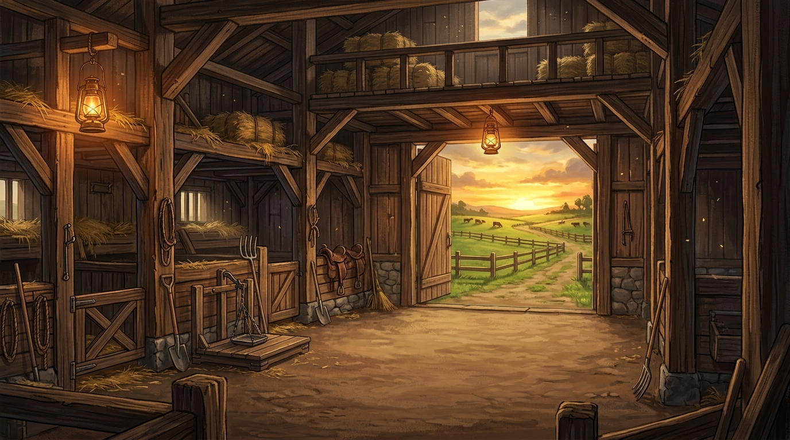
Monitoreo del punto óptimo de reposo en 8 potreros. Regla de oro de Voisin: nunca ingresar antes de floración ni despuntar por debajo de 5cm.
Lectura de microchips y caravana auricular. Vinculación directa con SIPEC del SAG para guías de libre tránsito y registro de eventos clínicos.
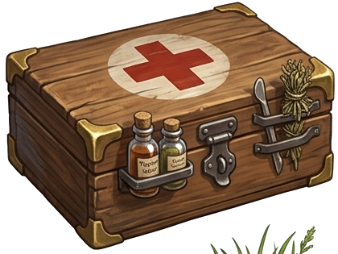
Desparasitación biorracional, tinturas madre de ruda y ajo, sulfato de cobre podal y control SAG de brucelosis/tuberculosis libre de hormonas.
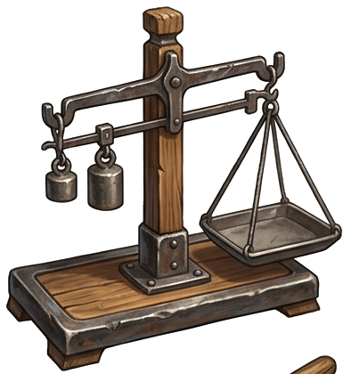
Monitoreo de peso vivo y conversión forrajera (GDP). Curva biométrica de Clarita y el lote de novillos en transición pastoreo.
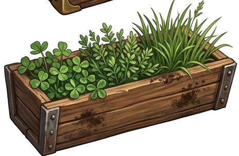
Cálculo de oferta forrajera por corte y plato digital. 2.850 kg MS/ha disponibles en mezclas de trébol blanco, festuca y llantén forrajero.
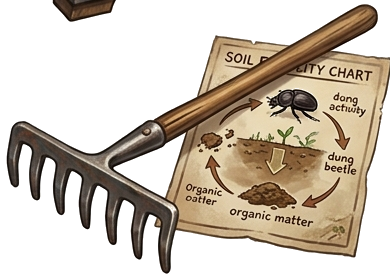
Descomposición aeróbica de bostas en menos de 48h gracias a ausencia de ivermectinas. Incorporación de nitrógeno y carbono al horizonte A del suelo.
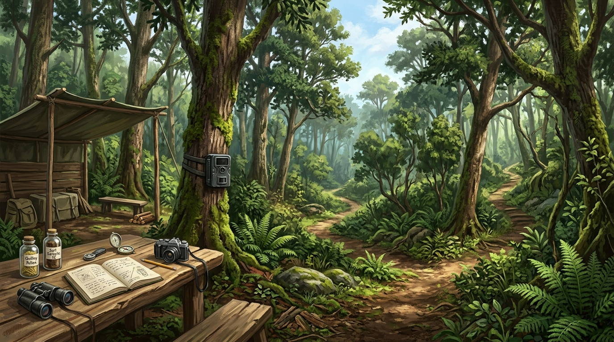
Guías operativas de campo: regeneración natural asistida, exclusión de ganado, enriquecimiento de sotobosque y perchas biológicas.
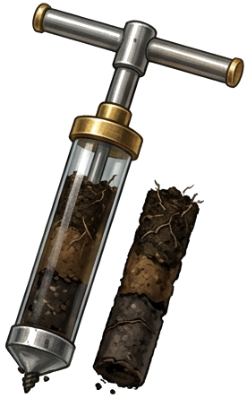
Muestreo vertical de testigos edáficos: horizonte orgánico O, capa arable A, profundidad efectiva de enraizamiento y cromatografía Pfeifer.
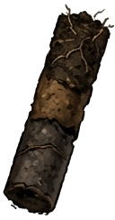
Galería de capturas infrarrojas nocturnas: avistamientos de güiña (*Leopardus guigna*), zorro chilla, pudú y monitoreo de corredores biológicos.
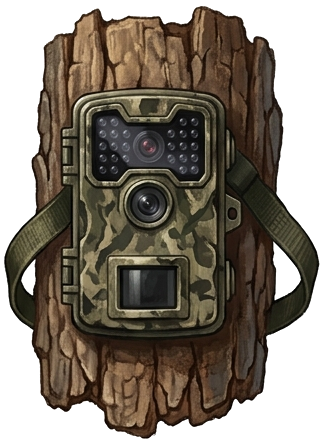
Levantamiento lineal Point-Intercept cada 50cm: cobertura de quillay, peumo, boldo, gramíneas anuales e Índice de Integridad Ecológica (IEI).
Conteo de hifas fúngicas, nemátodos bacteriófagos y protozoos. Relación hongo/bacteria (F:B) para diagnóstico de suelo supresivo.
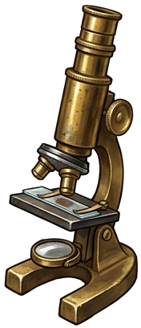
Cálculo del Índice de Complejidad Acústica (ACI) y detección automática de cantos de chucao, torcaza y anfibios en cursos de agua.
Ortomosaico multiespectral, clasificación de suelos de la cuenca (agrícola, forestal, nativo) y vigor NDVI.
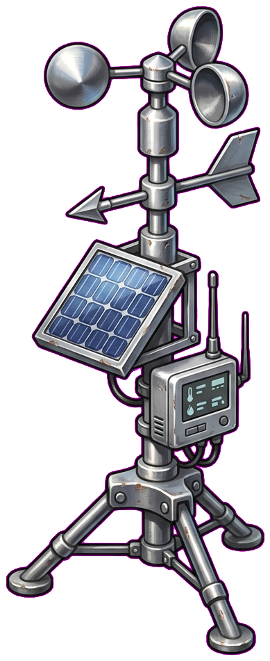
Monitoreo de ráfagas secas del este, combustible fino FFMC y frente de llama Rothermel sobre plantaciones contiguas.
Vuela de inmediato a Fundo Meniel, Embalse Bullileo, Retiro Pueblo, Parral Centro o el Cruce del Río Longaví.
Portafolio de 4 obras territoriales: Tranque Bullileo 2, Faja Cortafuegos Borde Cordillera y Reforestación Ribereña.
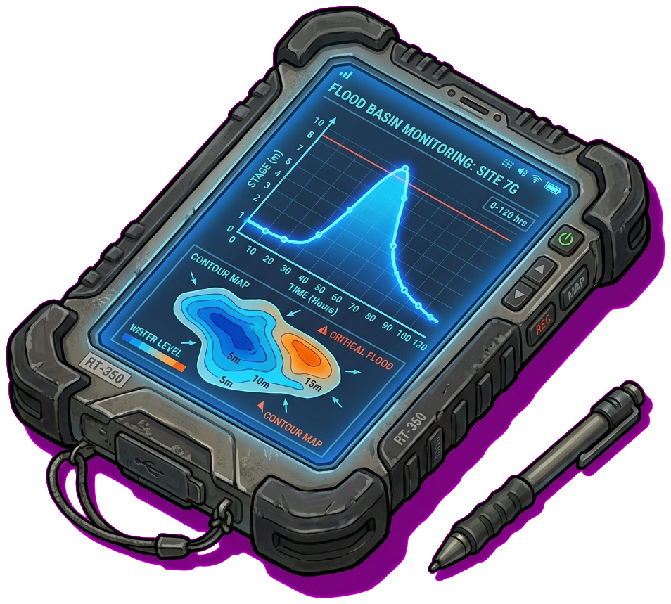
Caudal Longaví (124.5 m³/s), amortiguación con Keyline, batimetría Bullileo y simulador de anegamiento T=10/50/100.
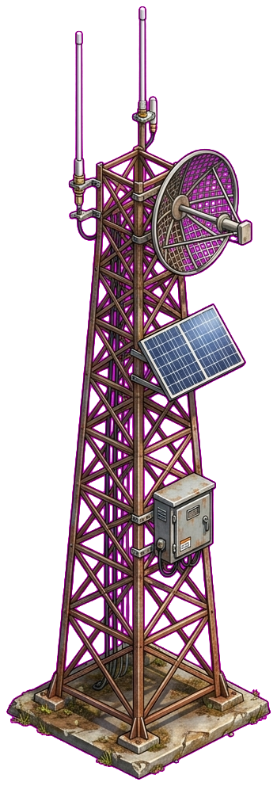
Cobertura LoRaWAN y niveles freáticos de los 5 Comités de Agua Potable Rural (Retiro, Copihue, Romeral, Villaseca).
Puntos neurálgicos de monitoreo en la cuenca. Haz clic en cualquiera para volar inmediatamente en el visor cartográfico:
Punto cero de infiltración subsuperficial: Tranque Keyline de 18.500 m³, 15 sondas FDR y barrera verde cortafuegos.
Capacidad máxima de 60M m³: principal regulador cordillerano de la cuenca del Río Bullileo y afluente del Longaví.
Nodo urbano densificado y confluencia de canales matrices de riego: 42.000 habitantes en zona de baja cota.
Corazón del valle cerealero: monitoreo de napas freáticas de los 5 Comités de Agua Potable Rural (APR) y cultivos de arroz.
Perspectiva completa de la macro-cuenca Maule Sur: gradiente desde la alta cordillera andina hasta los llanos de secano interior.
Estación fluviométrica DGA Quilaimo: simulación de áreas de anegamiento fluvial y amortiguación por Keyline y esteros.
Caudal real 124.5 m³/s, tiempo de concentración tc=6.2h, batimetría Bullileo y amortiguación por tranques Keyline.
Índice FWI 24 (Bajo hoy), combustible fino FFMC, simulador Rothermel de frente de llama y franjas limpias de 45m.
5 boyas agrometeorológicas terrestres enlazadas a 5 comités APR (3.220 familias) para alerta temprana de sequía y abatimiento.
Fundo Meniel • Residencial & Fotovoltaico
Centro habitacional y neurálgico del Fundo Meniel. Concentra el sistema de generación fotovoltaica con 36 paneles solares de 500Wp, inversor híbrido trifásico y banco de acumulación en litio LiFePO4. Alimenta las bombas de impulsión de riego, telecomunicaciones LoRaWAN de las 15 sondas FDR y abastece confort térmico pasivo.
Inspección estratigráfica multinivel en suelo, balance evapotranspirativo FAO-56 y dinámica de napas freáticas APR.
Histórico de 24 horas con bandas de Capacidad de Campo (CC) y Punto de Marchitez (PMP)
Centro formal de documentación técnica: Arquitectura Multiescala con Diagramas Mermaid interactivos, Motores Algorítmicos Biofísicos ejecutables, Datasets Geoespaciales Vectoriales y Mosaico Catastral Comunitario.
Marco integral de inteligencia territorial comunitaria que combina dos pilares complementarios: «Vecino Informado» (teledetección espectral, diagnóstico biofísico de biomasa y catastro hídrico desvinculado de los roles del SII) y «Vecino Protegido» (física determinística de choque, balística de incendios, balance hidráulico de supresión y drenaje catabático de heladas).
Es la fase de visibilidad biofísica pura. Resuelve la ceguera predial tradicional sin depender de encuestas, escrituras notariales ni colaboración del propietario colindante:
Es la fase de maniobra táctica y resguardo físico. Convierte los datos del mapa en ecuaciones ejecutables de ingeniería para neutralizar el desastre antes del impacto:
Para mantener la honestidad técnica y no prometer funcionalidades que hoy solo existen en simulación algorítmica, la siguiente matriz audita las tecnologías físicas que actualmente no están conectadas en terreno y su plan de integración:
Torretas con visión dual (óptico 4K + sensor térmico LWIR) con inferencia AI (YOLO) para detección precoz de columnas de humo (<3 min) y vigilancia nocturna.
Estaciones base remotas (DJI Dock / M30T) para rondas nocturnas automáticas, patrullaje contra cuatrerismo e inspección fotogramétrica perimetral (<5 cm/px).
Protocolo de radiofrecuencia LoRa P2P off-grid (independiente de antenas 4G que colapsan en desastres) para activación de sirenas y pulsadores de pánico comunitarios.
Aretes electrónicos RFID/BLE de largo alcance para ganado mayor y sensores de apertura de trancas en deslindes para prevención de abigeato.
Re-arquitectura táctil vertical responsive para cuadrillas en terreno con geolocalización GPS nativa y modo fuera de línea con caché de mapas vectoriales.
Modelos epidemiológicos de dispersión de plagas transfronterizas (polilla del racimo, Drosófila de alas manchadas) entre frutales vecinos.
Al usuario no le interesa de quién es legalmente el predio vecino para evaluar si corre peligro de incendio o sequía. Separamos el procesamiento espectral puro del mosaico de roles del SII para delimitar unidades biofísicas homogéneas independientes del cerco de alambre.
Para evitar el efecto "sal y pimienta" (150.000 micro-polígonos pixelados de 10m), aplicamos un esquema de Nivel de Detalle Espacial:
En verano, Sentinel-2 puede arrojar firmas idénticas entre monocultivo de pino maduro y bosque esclerófilo denso. Para garantizar >94% de certeza, se unificaron provisionalmente bajo «Biomasa Forestal Continua».
Capas vectoriales integradas en el motor cartográfico de AgriTwin
| Clase Biofísica | Polígono Representativo | Superficie | Resolución LOD | Certeza Espectral | Vínculo Táctico / Riesgo |
|---|---|---|---|---|---|
| 💧 Espejo de Agua | Tranque Acumulador Meniel | 1.8 ha (18.500 m³) | Local 5 km (MMU 1.5 ha) | 98% (MNDWI) | Punto de abastecimiento aéreo para brigadas y cortafuego vivo |
| 💧 Espejo de Agua | Tranque Vecinal Los Cristales | 2.4 ha (24.800 m³) | Local 5 km (MMU 1.5 ha) | 97% (MNDWI) | Respaldo hídrico colaborativo en red vecinal |
| 🌲 Biomasa Forestal | Rodal Forestal Flanco Norte | 14.2 ha | Local 5 km (MMU 1.5 ha) | 94% (S2 BOA) | Vulnerabilidad de interfaz WUI sobre el flanco norte de Meniel |
| 🌲 Biomasa Forestal | Remanente Nativo Quebrada El Guindo | 8.5 ha | Local 5 km (MMU 1.5 ha) | 92% (S2 BOA) | Amortiguador biológico de erosión y cortafuego natural en vaguada |
| 🌾 Matriz Agrícola | Cuarteles Cerezos & Avellanos Meniel | 22.0 ha (12 ha + 10 ha) | Local 5 km (MMU 1.5 ha) | 96% (S2 BOA) | Canopia densa activa; barrera verde hidratada contra fuego |
| 🌲 Biomasa Forestal | Cinturón Biomasa Precordillera Andina | 12.300 ha | Macro-Cuenca (MMU ≥50 ha) | 94% (S2 BOA) | Combustible masivo continuo en corredor de viento Puelche |
| 🌾 Matriz Agrícola | Matriz Agrícola Irrigada Cuenca Media | 18.600 ha | Macro-Cuenca (MMU ≥50 ha) | 96% (S2 BOA) | Amortiguador térmico de baja inflamabilidad estival |
| 💧 Espejo de Agua | Espejo Mayor Embalse Bullileo | 3.200 ha | Macro-Cuenca (MMU ≥50 ha) | 99% (MNDWI) | Reserva hídrica estratégica regional (84.2 Hm³) |
Este Módulo 1 incorpora directamente las metodologías de segmentación y detección automática analizadas en nuestro Dossier Estratégico:
Conservación de Masa en Cuenca • Método SCS-CN de Infiltración • Ecuación Canónica FAO-56 de Evapotranspiración de Referencia ($ET_0$)
El suelo agrícola actúa como un reactor poroso dinámico donde cada milímetro de precipitación ($P$) o riego se redistribuye entre la evapotranspiración real ($ET$), la escorrentía superficial directa ($Q_{\text{escorr}}$), la recarga freática profunda ($I_{\text{profundo}}$) y la variación de almacenamiento edáfico en la zona radicular ($\frac{dS}{dt}$):
Donde $R_n$ es la radiación neta foliar ($\text{MJ/m}^2\text{/día}$); $G$ es el flujo térmico del suelo; $T$ es la temperatura del aire a $2\text{ m}$ ($^\circ\text{C}$); $u_2$ es la velocidad del viento a $2\text{ m}$ ($\text{m/s}$); $(e_s - e_a)$ es el déficit de presión de vapor ($\text{kPa}$); $\Delta$ es la pendiente de saturación psicrométrica; y $\gamma \approx 0.067\text{ kPa/}^\circ\text{C}$ es la constante psicrométrica ajustada a la cota barométrica de Longaví ($140\text{ m.s.n.m.}$).
Donde $S$ es la retención potencial máxima del suelo ($\text{mm}$); $I_a = 0.2 S$ es la abstracción inicial por follaje y micro-relieve; y $CN$ es la curva numérica calibrada ($CN=72$ en praderas PRV y $CN=84$ en suelos francos desnudos pre-siembra). Todo el volumen es capturado por las zanjas de infiltración en línea clave Yeomans.
Doctrina de Propagación Canónica (Rothermel 1972) • Teledetección de Humedad Foliar Sentinel-2 (LFMC) • Salto Balístico de Pavesas (Albini 1979)
Inspirado en la cartografía militar de frentes de batalla (referencia histórica de frentes divergentes), el fuego en la interfase urbano-agrícola-forestal (WUI) no se propaga como una sola flecha recta. Cada rodal de biomasa combustible proyecta un haz de vectores que divergen a lo largo del frente de contacto. La flecha central de cabeza concentra la mayor probabilidad y velocidad lineal, mientras que los flancos se abren en abanico y las pavesas aerotransportadas saltan cortafuegos hacia adelante.
El viento Puelche es la condición más devastadora pero no la única que gobierna la cuenca. El motor biofísico evalúa la balística bajo 4 escenarios meteorológicos deterministas:
| Régimen Eólico | Dirección / Forzante | Velocidad / HR | Humedad Foliar (LFMC) | Avance (R) | Sector Vulnerable en Meniel |
|---|---|---|---|---|---|
| 🌪️ Puelche Catabático | ESE (120°) → WNW | 42 km/h • HR 14% | 62% (Crítico <80%) | 18.4 m/min (1.1 km/h) | Deslinde Este (Colindancia directa <15 min) |
| 🌬️ Surazo Estival | SSW (205°) → NNE | 24 km/h • HR 44% | 78% (Alerta Media) | 10.2 m/min (0.6 km/h) | Deslinde Sur & Potreros PRV (Franja Bullileo) |
| 🧭 Norte Pre-Frontal | NNW (340°) → SSE | 28 km/h • HR 36% | 71% (Alerta) | 12.7 m/min (0.8 km/h) | Deslinde Norte & Cuarteles Frutales |
| 📡 Tiempo Real SDSS | Dinámico (Sensores IoT) | Estación DGA/Meniel | Sensor In-Situ | Cálculo Horario | Reevaluación continua con cada ráfaga |
Donde $I_R$ es la intensidad de reacción térmica del combustible fino (MJ/m²·min); $\xi$ es el flujo de propagación propagante; $\Phi_w = C \cdot U_{\text{midflame}}^B \cdot (\beta/\beta_{\text{op}})^{-E}$ es el coeficiente acelerador del viento; $\Phi_s = 5.275 \cdot (\tan \theta)^2$ es el factor orográfico de pendiente derivado del Copernicus DEM 30m; y $Q_{ig} = 581 + 2594 \cdot m_f$ es el calor requerido para la ignición en función de la humedad del combustible fino ($m_f$).
El agua líquida dentro del mesófilo foliar absorbe selectivamente en el Infrarrojo de Onda Corta ($\text{SWIR}_1$, B11 a 1610 nm), mientras que la estructura celular sana refleja fuertemente en el Infrarrojo Cercano (NIR, B8A a 865 nm). Cuando $\text{LFMC} < 80\%$, las acículas de pino se vuelven explosivamente inflamables facilitando la transición a fuego de copas.
Calcula el equilibrio higrométrico dinámico de combustibles finos muertos de 1h y 10h a partir de la temperatura $T$ y humedad relativa $HR$ de superficie.
El avance del fuego en Chile central no se detiene en las fajas cortafuegos debido al desprendimiento de pavesas (*firebrands*). El gemelo acopla el frente continuo de Rothermel con la física de trayectoria balística aérea:
Calcula la cota cenital alcanzada por acículas y conos de pino impulsados por la flotabilidad térmica ascendente ($w_{\text{plume}} \propto I_R^{1/2}$).
Determina la distancia aerotransportada bajo ráfagas Puelche ($U_{\text{ráfaga}}$), proyectando el cono de dispersión sobre caminos y esteros.
Una partícula de corteza de eucalipto ($d_p = 4\text{ mm}$) sobrevive en vuelo hasta $180\text{ s}$, manteniendo capacidad de ignición a $1.5\text{ km}$.
Para $W_{\text{faja}} = 45\text{ m}$ con hojarasca seca ($m_f = 5\%$), $\mathbb{P}_{\text{salto}} \approx 94\%$. La pre-humectación perimetral ($m_f > 22\%$) abate la probabilidad bajo el $12\%$.
Bajo condiciones de estrés extremo ($T > 30^\circ\text{C}$, $HR < 30\%$, Viento $> 30\text{ km/h}$), una faja cortafuego convencional de 5 metros es completamente inútil frente al salto de pavesas ($D_{\text{spot}} > 900\text{ m}$). El Estándar Vecino Informado prescribe una estrategia defensiva en 3 escalones: faja desmalezada de 45m en el deslinde crítico, precarga del tranque de 18.500 m³ para aforo de motobombas y humectación perimetral por aspersión 40 minutos antes del impacto proyectado.
Cómo el nuevo estándar articula el catastro legal preexistente, las flechas previas y la física balística
Antes del despliegue del Estándar Vecino Informado, la plataforma contaba con elementos cartográficos aislados: los 9 predios catastrales del SII, la flecha roja estática del Transecto P-01 y las ondas dinámicas de viento en Canvas. La siguiente matriz audita cómo el nuevo marco recoge estos activos previos, resuelve sus puntos ciegos y los ensambla en una doctrina coherente y no redundante:
Qué representa: La titularidad jurídica inscrita en el Conservador de Bienes Raíces (Rol 142-88 de Fundo Meniel, roles de Forestal Mininco, Viña San Manuel, etc.).
Para qué sirve: Gobernanza institucional, suscripción de convenios de cortafuegos compartidos, seguros agrícolas y deslindes notariales.
Qué representa: La biomasa vegetal real detectada por reflectancia espectral Sentinel-2 L2A (10m BOA). Ignora los alambrados y roles; si un bosque de pino cruza 3 roles prediales, se agrupa como una sola unidad combustible continua.
Por qué el borde segmentado ($\texttt{dashArray}$): Expresa honestamente la incerteza de borde espectral ($\sigma_{\text{edge}} = \pm 10\text{ m}$) y la permeabilidad biológica de los frentes vivos.
Las tres representaciones vectoriales del visor responden a escalas físicas complementarias que conviven armónicamente:
| Vector / Flujo | Escala Territorial | Mecánica de Renderizado | Pregunta que responde al Agricultor |
|---|---|---|---|
| 1. Flecha de Transecto Pirogénico | Macro-Cuenca Regional | Marcador SVG direccional estático en el cajón cordillerano (AVANCE PUELCHE ◄). |
«¿Por dónde drena el viento catabático general de la cordillera hacia el valle?» |
| 2. Flujo Dinámico de Partículas (60 FPS) | Zonal Continua | Partículas cinéticas vivas en Canvas WebGL moduladas por el modelo ECMWF/GFS en tiempo real. | «¿Hacia dónde corre el aire en este instante sobre las laderas y con qué turbulencia?» |
| 3. Haces Vectoriales Tácticos (Módulo 2) | Predial Táctica (LOD 5 km) | Abanicos de curvas Bézier sobre relieve con elipse de Huygens (frente grueso $6\text{ px}$ vs flancos $2\text{ px}$), Rothermel y pavesas Albini. | «¿De qué bosque vecino específico saldrá el fuego hacia mi cerco, en cuántos minutos y con qué probabilidad?» |
Para evitar la sobrecarga cognitiva y la dispersión de tarjetas, toda la inteligencia de incendios se consolidó bajo la siguiente jerarquía:
El acordeón desplegable «a. Incendios Forestales & Balística Transfronteriza» unifica los 4 regímenes eólicos, la telemetría balística y los transectos en un único panel.
El bloque Cobertura de Suelo activa el LULC biofísico segmentado (Módulo 1), mientras el bloque Catastro Predial controla los límites legales continuos.
Flyout superior limpio que expone selectores discretos con badges dinámicos (ON/OFF), sin invadir el espacio 3D del mapa.
Justifica formalmente el trazado segmentado ($\texttt{dashArray: 7, 4}$): cada frontera cartográfica representa un gradiente de confianza del píxel de 10m y no una cerca perimetral.
Calcula el vector de amenaza sobre el Fundo Meniel como la sumatoria espacial de los frentes de avance y pavesas de todos los rodales vecinos activos.
Resistencia de la Faja de 45m • Penetración por Pavesas • Amortiguación Hídrica vía Tranque Meniel
Cuando un foco de incendio (simulado mediante Click-to-Ignite o generado por un macizo forestal vecino) avanza hacia el Fundo Meniel, colisiona con la Faja Defensiva WUI de 45 metros dispuesta en el deslinde este. El sistema evalúa dos fenómenos físicos acoplados: la detención por suelo mineral y el salto aerotransportado de pavesas, dimensionando el caudal de agua necesario del tranque acumulador para impedir el vuelco hacia los cuarteles agrícolas.
Para $W_{\text{faja}} = 45\text{ m}$ y longitud de llama $L_{\text{llama}} \approx 3.2\text{ m}$, la faja de suelo mineral detiene entre el 85% y 98% del fuego terrestre creeping, pero es permeable a la radiación de copa.
Bajo Puelche ($D_{\text{spot}} = 1.35\text{ km} \gg 45\text{ m}$), $\mathbb{P}_{\text{salto}} \approx 94\%$. Demuestra matemáticamente que un cortafuegos sin agua es vulnerado por vía aérea.
Con $L=650\text{ m}$, $W=45\text{ m}$ y $q=4.5\text{ L/m}^2\text{/h}$ por 40 min: requiere $88\text{ m}^3$ ($0.48\%$ del Tranque Meniel de $18.500\text{ m}^3$). Amortiguación 100% viable.
Al simular una ignición ad-hoc mediante Click-to-Ignite, el visor calcula de inmediato el sector vulnerable de Meniel y programa la precarga de aspersores perimetrales. Al saturar la hojarasca y el borde con $88\text{ m}^3$ de agua antes de la llegada del frente, la probabilidad de ignición por pavesas cae de $94\%$ a menos del $12\%$, protegiendo los cuarteles de cerezos y avellanos contiguos.
Auditoría radiométrica BOA (Bottom-Of-Atmosphere), catálogo banda a banda, índices multiespectrales y delimitación de capacidades
AgriTwin procesa diez bandas espectrales del sensor MSI (MultiSpectral Instrument) a bordo de Sentinel-2A y 2B. Cada banda interactúa con propiedades moleculares, anatómicas y superficiales distintas de la cuenca:
| Banda | Región Espectral | Centro ($\lambda$) | Resolución | Interacción Física con la Materia | Función Biofísica en AgriTwin |
|---|---|---|---|---|---|
| B02 | Azul Visible | 490 nm | 10 m | Dispersión atmosférica Rayleigh; absorción por carotenoides y clorofila a/b. | Término de corrección en Bare Soil Index (BSI) y penetración en cuerpos de agua. |
| B03 | Verde Visible | 560 nm | 10 m | Pico de reflectancia de la vegetación fotosintética sana (baja absorción por clorofila). | Detección de lámina de agua libre en tranques de cuenca mediante NDWI de McFeeters. |
| B04 | Rojo Visible | 665 nm | 10 m | Máxima absorción fotónica de la clorofila en el centro de reacción fotosintético. | Contraste base para NDVI, SAVI y componente mineral en suelo descubierto (BSI). |
| B05 | Red-Edge 1 | 705 nm | 20 m | Límite abrupto entre absorción de clorofila y dispersión celular de la hoja. | Crítico en frutales: Base de NDRE y MCARI para evitar la saturación de NDVI en verano. |
| B06 | Red-Edge 2 | 740 nm | 20 m | Transición de borde rojo altamente correlacionada con la estructura del dosel. | Estimación de Área Foliar (LAI) en cerezo y avellano en etapas de follaje cerrado. |
| B07 | Red-Edge 3 | 783 nm | 20 m | Meseta de reflectancia; insensible a la clorofila, sensible a la biomasa total. | Evaluación de senescencia otoñal, acumulación de materia seca y contenido de nitrógeno. |
| B08 | NIR Ancho | 842 nm | 10 m | Máxima dispersión refractiva interna por la estructura esponjosa del mesófilo foliar. | Pilar del vigor vegetal (NDVI/SAVI); absorción casi total en agua pura ($>99\%$). |
| B8A | NIR Estrecho | 865 nm | 20 m | Banda espectral estrecha diseñada para evadir la absorción por vapor de agua. | Calibración radiométrica fina de biomasa y cálculo canónico de NDWI de Gao (1996). |
| B11 | SWIR 1 | 1.610 nm | 20 m | Fuerte absorción por agua líquida en células vegetales; reflectancia de celulosa seca. | Diagnóstico precoz de estrés hídrico (NDMI) 10-14 días antes del marchitamiento. |
| B12 | SWIR 2 | 2.190 nm | 20 m | Sensible a lignina, enlaces C-H/C-O de materia orgánica y suelo hidrolizado. | Cálculo de piro-riesgo (NBR), necromasa combustible y proxy de Carbono Orgánico (SOC). |
Vigor fotosintético global (Rouse 1974). Se satura en doseles cerrados $> 0.82$.
Rompe la saturación estival en frutales densos (Gitelson 1994). Sensible al nitrógeno.
Contenido de agua foliar (Gao 1996). Alerta de déficit 10-14 días antes del síntoma visual.
Detección de espejos de agua en tranques de cuenca eliminando sombras orográficas (Xu 2006).
Absorción pura de clorofila libre del ruido del suelo descubierto (Daughtry 2000).
Atenúa el brillo del suelo desnudo entre hileras de avellanos jóvenes (Huete 1988).
Evalúa necromasa seca combustible y severidad de cicatrices de fuego (Key 2006).
Mapeo de suelo desnudo y proxy de materia orgánica / Carbono en cuenca (Castaldi 2018).
Un gemelo digital riguroso no le atribuye capacidades mágicas al satélite. La física de la radiación electromagnética captada a $786\text{ km}$ de altitud tiene fronteras ópticas precisas que definen qué variables se resuelven en el espacio y cuáles exigen modelación biofísica de cuenca o muestreo de terreno:
Catastro oficial de obras de acumulación en Maule Sur. Coordenadas legales, cuenca aportante (Río Longaví y canales matrices) y volumen nominal de diseño ($m^3$).
Expedientes de obras bonificadas: tipología constructiva (tierra compactada vs geomembrana HDPE 1.5mm), talud ($2:1$ a $3:1$) y compuertas de entrega.
Metodología InfeRes / Global Water Watch para cubicación volumétrica batimétrica sin asumir cilindros planos ($\alpha=0.042, \beta=1.28$).
Ecuaciones de escurrimiento denso de Prandtl, radiación neta nocturna y cuantificación honesta del error
Durante noches despejadas de primavera con viento en calma ($u_2 < 1.5\text{ m/s}$), el suelo pierde energía hacia el espacio por radiación de onda larga ($R_{nl}$). El aire en contacto con la pendiente se sobre-enfría y adquiere mayor densidad ($\rho_{\text{frío}} > \rho_{\text{cálido}}$), escurriendo gravitacionalmente por las vaguadas hacia el fondo del valle. Para evitar pseudociencia y falsas precisiones, el modelo desglosa con total transparencia la física y sus márgenes de tolerancia:
Formulación de Prandtl / Mahrt: para una pendiente $s = \sin(\alpha) \approx 0.03$ y tirante de capa $h_{\text{capa}} \approx 10\text{ m}$, el frente frío avanza a $0.8\text{ a } 1.8\text{ m/s}$ encauzado por las quebradas hacia Meniel.
Con cielo despejado ($\text{nubes} < 10\%$) y baja humedad relativa ($\text{HR} < 45\%$), la pérdida radiativa superficial alcanza $-65\text{ a } -85\text{ W/m}^2$, induciendo una tasa de enfriamiento foliar de $1.1^\circ\text{C/hora}$.
Principio de Honestidad: No se reportan temperaturas fijas. El corredor catabático tiene $\pm 20\text{ m}$ de tolerancia lateral por resolución del DEM (30m) y la piscina térmica se expresa como anomalía relativa.
Para validar si la piscina de aire frío predicha en la vaguada del cuartel Lapins desciende efectivamente a $-2.5^\circ\text{C}$, se recomienda ubicar un termohigrómetro pasivo calibrado ($35.000\text{ CLP}$) a 1.5m en la cota más baja (196 msnm). El sistema se calibra empíricamente con este dato real sin necesidad de torres costosas de 20 metros.
Efecto presa por cortinas forestales, umbrales de daño en cerezos y consumo de aspersión del Tranque Meniel
Cuando el flujo de aire frío desciende por una vaguada natural y se topa con un macizo forestal denso o cortina cortaviento no permeable en el predio vecino, actúa como una represa hidráulica, acumulando un lago de aire gélido aguas arriba que sumerge los cuarteles agrícolas adyacentes:
Si la porosidad óptica $\beta_{\text{poro}} < 0.25$ (cortina densa de pino/eucalipto en deslinde vecino), el tirante frío se eleva $2\text{ a } 4\text{ metros}$, cubriendo el tercio inferior de las copas de cerezos durante horas críticas.
En cerezos Lapins, temperaturas bajo $-2.2^\circ\text{C}$ durante más de 30 minutos causan un $10\%\text{ a } 50\%$ de necrosis en el pistilo. En avellano Tonda, el amento resiste hasta $-4.0^\circ\text{C}$.
Para $12\text{ ha}$ de Lapins a $q = 40\text{ m}^3\text{/ha/h}$ durante $6\text{ h}$ continuas: requiere $2.880\text{ m}^3$ ($15.5\%$ del Tranque Meniel de $18.500\text{ m}^3$). Amortiguación 100% garantizada para 6 noches.
La solución más costo-efectiva ante una represa térmica no es gastar combustible en hélices, sino coordinar con el vecino la poda basal de los primeros 1.5 a 2 metros de la cortina cortaviento en el lecho de la vaguada (faja de desahogo catabático). Esto permite que el aire frío continúe drenando ladera abajo hacia el estero sin estancarse sobre los cuarteles productivos de ambos predios.
Por qué el $\text{CAPE}$ es el combustible de flotabilidad vertical, por qué requiere cizalladura $0\text{--}6\text{ km}$ y cómo se separa Vigilancia (Watch), Detección (Nowcasting) y Escenario Hipotético (What-If)
En meteorología física, no es posible predecir con horas o días de anticipación la coordenada exacta donde tocará tierra un tornado. Sin embargo, sí es físicamente riguroso cuantificar la energía termodinámica disponible para las corrientes ascendentes mediante el $\text{CAPE}$ (Convective Available Potential Energy), evaluar el cizalle vertical que induce la rotación mesociclónica y simular el impacto estructural de la presión dinámica del viento ($q = \frac{1}{2}\rho v^2$) sobre activos prediales:
Representa la energía potencial por unidad de masa ($\text{J/kg}$) que gana una parcela húmeda más cálida ($T_{v,p}$) que su entorno ($T_{v,e}$) entre el Nivel de Convección Libre ($z_{\text{LFC}}$) y el Nivel de Equilibrio ($z_{\text{EL}}$). Un $\text{CAPE} = 500\text{ J/kg}$ impulsa una corriente ascendente teórica de $w_{\max} \approx 31.6\text{ m/s}$ ($114\text{ km/h}$), capaz de estirar tubos de vorticidad verticalmente.
El $\text{CAPE}$ por sí solo sólo produce ascenso vertical. Para que la tormenta rote se requiere cizalladura vertical fuerte ($S_{0-6} \ge 20\text{ m/s}$) entre la superficie y los $500\text{ hPa}$ ($\sim 5.5\text{ km}$). En el Centro-Sur de Chile ($35^\circ\text{S--}40^\circ\text{S}$) dominan los eventos invernales HSLC (High-Shear, Low-CAPE): $\text{CAPE}$ moderado ($300\text{--}800\text{ J/kg}$) pero altísima cizalladura post-frontal y base de nube baja ($z_{\text{LCL}} < 900\text{ m}$).
Un tornado EF1 ($165\text{ km/h} = 45.8\text{ m/s}$) ejerce $q \approx 1.285\text{ Pa}$, superando la resistencia de invernaderos LDPE ($450\text{ Pa}$) y techumbres livianas ($900\text{ Pa}$). Una cortina nativa multi-estrato ($z_0 = 0.85\text{ m}$, porosidad $35\%$) reduce la velocidad basal un $35\%$, abatiendo la presión dinámica en un $58\%$ ($q_{z_0} \approx 540\text{ Pa}$).
Matriz Canónica $R(\mathbf{x}, t) = H(\mathbf{x}, t) \times V(\mathbf{x}) \times C(\mathbf{x})$ • Desacople Epistemológico entre Leyes Físicas Inmutables y Datos Particulares de Terreno
La doctrina de mando y control (C2) de AgriTwin rechaza los diagnósticos estáticos que entregan mapas decorativos sin capacidad de respuesta. Todo cálculo biofísico debe alimentar una ventana de maniobra cinemática ($0\text{ a } 12\text{ horas}$) donde el operador y la comunidad vecinal pueden tomar decisiones antes de que el evento cruce el umbral destructivo:
$H$ (Amenaza): Magnitud biofísica externa (FWI, helada catabática o crecida).
$V$ (Vulnerabilidad): Resistencia del cultivo o bioma colindante.
$C$ (Costo/Activo): Exposición de viviendas, tranques y sistemas APR.
Frente a una ráfaga de viento Puelche ($42\text{ km/h}$) o vaciado de helada catabática, el gemelo digital emite la recomendación de presurización o cortina en menos de $15\text{ min}$, otorgando hasta $2\text{ horas}$ de maniobra anticipada.
$\mathcal{L}$ (Inmutable): La física universal (Darcy, Rothermel, KaTeX, FWI, Navier-Stokes).
$\mathcal{S}_i(t)$ (Particular): Las parcelas, el suelo y las sondas de cada predio rural.
Se garantiza portabilidad total del software sin alterar la doctrina.
Ecuaciones deterministas de escorrentía superficial D8, recarga freática, absorción alométrica de CO2 y votación cuadrática de bienes comunes
Modela la velocidad de flujo $v$ y el caudal $Q$ en los lechos del Río Longaví y esteros colindantes en función de la rugosidad de lecho $n = 0.045$, radio hidráulico $R_h$ y gradiente topográfico $S$ derivado del DEM de $30\text{ m}$.
Cuantifica la recarga inducida hacia los 5 comités APR ($42.000\text{ m}^3\text{/año}$) inducida por la carga piezométrica $\Delta h$ del Tranque Meniel a través de las gravas aluviales con conductividad $K = 4.5\times 10^{-4}\text{ m/s}$.
Los surcos en línea clave y el tranque de $18.500\text{ m}^3$ desvían las puntas de crecida pluvial ($180\text{ m}^3\text{/s}$ amortiguados a $175.8\text{ m}^3\text{/s}$), incrementando la humedad volumétrica del suelo ($+17.8\%\text{ VWC}$).
Modela la biomasa aérea seca ($AGB$) de Quillay y Maitén a partir del diámetro ($DBH$) y altura ($H$), auditando el secuestro anual con ratio estequiométrico $44/12$ ($384\text{ tCO}_2\text{e}$).
Ingesta de ISRIC SoilGrids 2.0 (250m) vía REST API y geodata::soil_world(var="soc", depth=5). Línea base regional en Longaví ($38.5\text{ g/kg}$, $24.2\text{ t C/ha}$ en $0-5\text{ cm}$), acoplada al proxy Sentinel-2 ($10\text{ m}$).
Previene la tiranía del latifundio en la gestión del agua comunitaria. Para emitir $V$ votos sobre la apertura de compuertas o financiamiento de cortafuegos, el predio debe erogar $V^2$ créditos de voz, protegiendo el interés simétrico de los pequeños propietarios.
Del Dashboard Cartográfico al Gemelo Digital Dinámico • Downscaling Micro-Orográfico 30m • Asimilación Kalman / Nudging de Nodos KioT
Bajo la metodología de modelación de la iniciativa europea Destination Earth (DestinE) formulada por el ECMWF y la ESA, un Gemelo Digital no es una acumulación de gráficos ni un mapa con puntos de colores. La diferencia metodológica radica en la capacidad de simulación acoplada y predicción determinista:
Las observaciones in-situ de los 9 nodos KioT (humedad FDR, viento y aforo) corrigen la trayectoria numérica del modelo, eliminando la deriva predictiva sin invalidar la conservación de masa.
El forzamiento global ECMWF (9 km) se proyecta sobre la malla Copernicus DEM (30 m), modelando aceleraciones en collados, efecto Venturi en quebradas andinas y sombra orográfica de viento.
Espacio discreto unificado: $P$ cuarteles $\times$ $Z$ profundidades de suelo $\times$ $T$ ventanas temporales $\times$ $V$ variables biofísicas, consultable en tiempo $O(1)$ sin duplicación de memoria.
Parral, Provincia de Linares, Región del Maule (VII) • 36.14°S, 71.82°O • 24.8 Hectáreas
Con Estero Colliguay en 420 metros y Fundo San Luis. Servidumbre natural de ribera protegida por DGA.
Con camino vecinal de servidumbre pública en 385 metros. Acceso principal de maquinaria y faja cortafuegos.
Con predio Forestal Los Pinos (Monocultivo de Pino Radiata). Zona de alto riesgo FWI con protocolo cortafuego verde.
Con Fundo Los Maquis y canal de regadío matriz en 295 metros lineales.
Espacio personal para apuntes de faena, checklists y tareas vinculadas a las 6 ramas de trabajo del territorio. Tus notas se guardan de forma soberana en este navegador y no alteran los consolidados ni la telemetría central del Hub.
Contraste directo entre el Incendio Real Observado (satélite dNBR) vs el Mapa de Riesgo Preventivo T-24h (AgriTwin).
Nodo Barométrico BMP390-Oeste reporta caída brusca ΔP/Δt = -14.2 hPa/min + ráfaga 118 km/h NO→SE. Protocolo de refugio inmediato en galpón/estructura firme (ventana estimada: 90–180 s).
ℹ️ Indica condiciones ambientales propicias a escala de valle ($w_{\max}=\sqrt{2\cdot\text{CAPE}}$), NO predice la ocurrencia ni coordenada exacta de un tornado.
Sensores FDR in-situ, piezometría y estaciones oficiales DGA/DMC
⚠️ Límites declarados: Detecta vórtices o micro-ráfagas que ya tocaron tierra sobre un nodo vecino (aviso de 60s a 5 min para refugio humano; sujeto a falsos positivos por frentes de ráfaga).
Deslindes catastrales, mosaico vecinal y navegación 3D
Rotación de 42 días: retiene 144.000 L de agua extra por hectárea y crea franjas perimetrales de 25m consumidas por ganado como cortafuegos vivos a costo cero.
Evaluación cuantitativa y clasificación táctica C2
Módulo 2 • Balística Predio a Predio (Rothermel + Huygens)
Viento andino descendente con compresión adiabática seca. Fuego de avance rápido (>18 m/min) con salto masivo de pavesas sobre cortafuegos.
Sentinel-2 dNBR (20m) • ERA5 Horario vs Rothermel
Compara directamente la cicatriz satelital real observada (rojo) frente a la elipse teórica del modelo (naranja) proyectada con el clima exacto de esa semana.
Desborde por crecida con Isoterma 0°C alta en cuenca alta del Longaví e impacto sobre meandros agrícolas.
Escarpe de falla geológica en ladera 34° precordillerana de Bullileo con cono aluvial de deyección runout L-110.
Sensor de Presión Hidrostática KioT: Transmisión LoRaWAN cada 15 min (Batería 99%, cota 198 msnm). Sirve de ancla de calibración biofísica ($\alpha \approx 0.042, \beta \approx 1.28$) para el modelo InfeRes en los restantes 17 tranques.
Catastros DGA-MOP, bonificaciones CNR Ley 18.450 y Copernicus Sentinel-2 L2A (BOA). Margen de tolerancia de cubicación satelital $\pm 15\%$. Datos destinados a Defensa Civil Comunitaria sin fines de fiscalización privada.
Para evitar datos inventados, si no hay escritura cargada se declara "no disponible". Complete los campos para registrar el título oficial del predio: